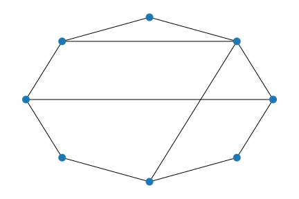
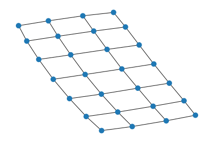
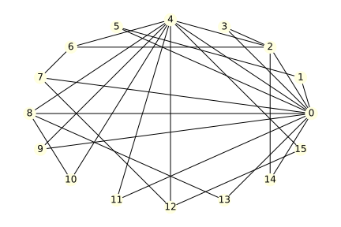
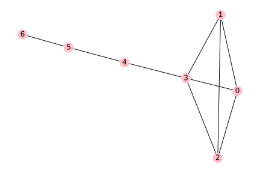

Exercises
6.7. Exercises¶
For each graph, give the number of nodes, the number of edges, and the average degree.
(a) The complete graph \(K_6\).
(b)
(c)
Give the adjacency matrix for the graphs in Exercise 1 (parts (a) and (b) only).
For the graph below, draw the ego graph of (a) node 4 and (b) node 8.
To construct an Erdős-Rényi graph on 25 nodes with expected average degree 8, what should the edge inclusion probability \(p\) be?
Find the diameters of the graphs in Exercise 1.
Suppose that \(\bfA\) is the adjacency matrix of an undirected graph on \(n\) nodes. Let \(\boldsymbol{1}\) be the \(n\)-vector whose components all equal 1, and let
\[ \mathbf{d} = \bfA \boldsymbol{1}. \]Explain why \(\mathbf{d}\) is the vector whose components are the degrees of the nodes.
Find (a) the clustering coefficient and (b) the betweenness centrality for each node in the following graph:
A star graph with \(n\) nodes and \(n-1\) edges has a central node that has an edge to each other node. In terms of \(n\), find (a) the clustering coefficient and (b) the betweenness centrality of the central node of the star graph.
(Tough one!) The Watts–Strogatz construction starts with a ring lattice in which the nodes are arranged in a circle and each is connected to its \(k\) nearest neighbors (i.e., \(k/2\) on each side). Show that the clustering coefficient of an arbitrary node in the ring lattice is
\[ \frac{3(k-2)}{4(k-1)}. \](Hint: Count up all the edges between the neighbors on one side of the node of interest, then all the edges between neighbors on the other side, and finally, the edges going from a neighbor on one side to a neighbor on the other side. It might be easier to work with \(m=k/2\) and then eliminate \(m\) at the end.)
Recall that the complete graph \(K_n\) contains every possible edge on \(n\) nodes. Prove that the vector \(\bfx=[1,1,\ldots,1]\) is an eigenvector of the adjacency matrix of \(K_n\). (Therefore, the eigenvector centrality is uniform over the nodes.)
Prove that for the star graph on \(n\) nodes as described in Exercise 8, the vector
\[ \bfx = \bigl[ \sqrt{n-1},1,1,\ldots,1 \bigr] \]is an eigenvector of the adjacency matrix, where the central node corresponds to the first element of the vector.
Prove the friendship paradox, i.e., inequality (6.5.1). (Hint: Start with (5.1.1) using \(\bfu=\mathbf{d}\) and \(\bfv\) equal to a vector of all ones. Convert from equality to inequality to get rid of the angle \(\theta\). Simplify the inner product, square both sides, and show that it can be rearranged into (6.5.1).)
{kind=link}
{kind=link}
{kind=link}
{kind=link}